Jason Duval
“Jason wants an easy life, but things just keep getting harder.”
He grew up around grifters and crooks. After a stint in the Army, he found himself in the Keys doing what he knows best: working for local drug runners.
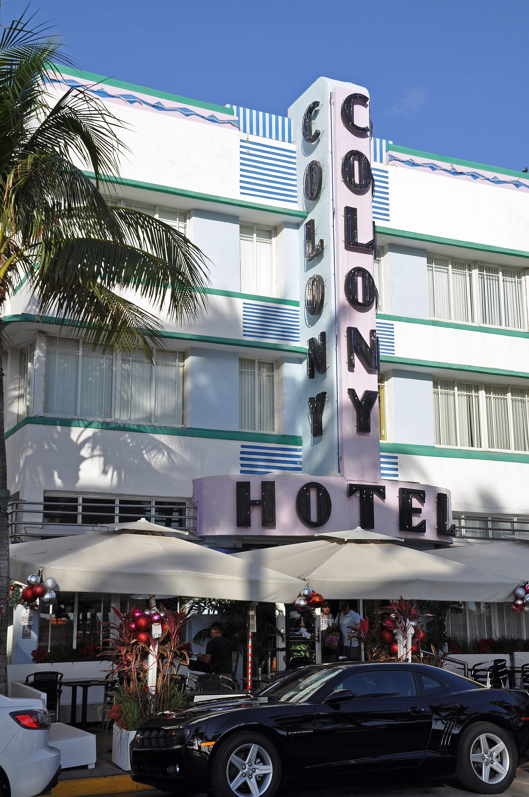
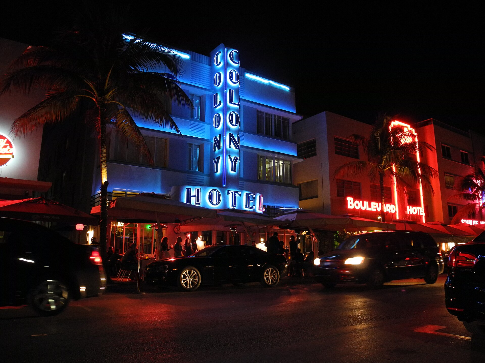
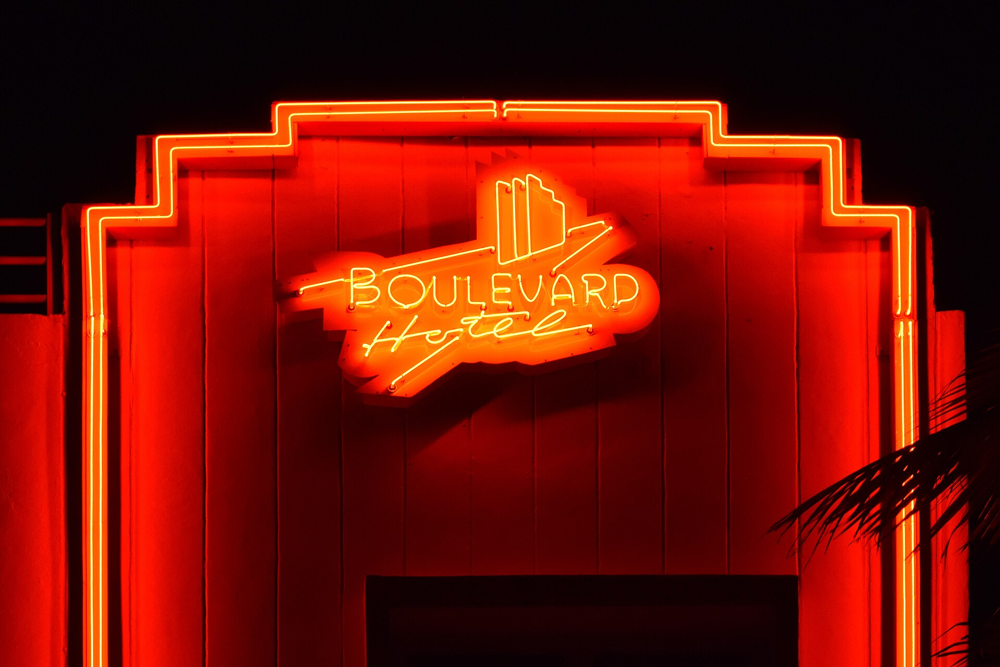
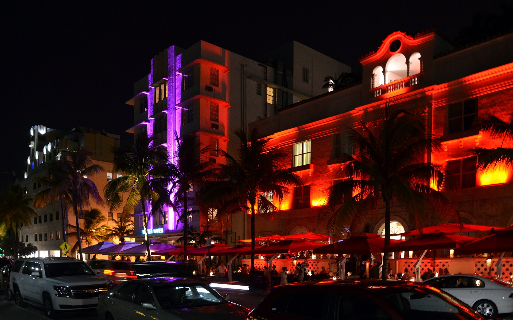
Grand Theft Auto VI is out now on PlayStation 5 and Xbox Series X|S. A fan-made welcome to the state of Leonida.
Grand Theft Auto VI heads to the state of Leonida, home to the neon-soaked streets of Vice City and beyond.
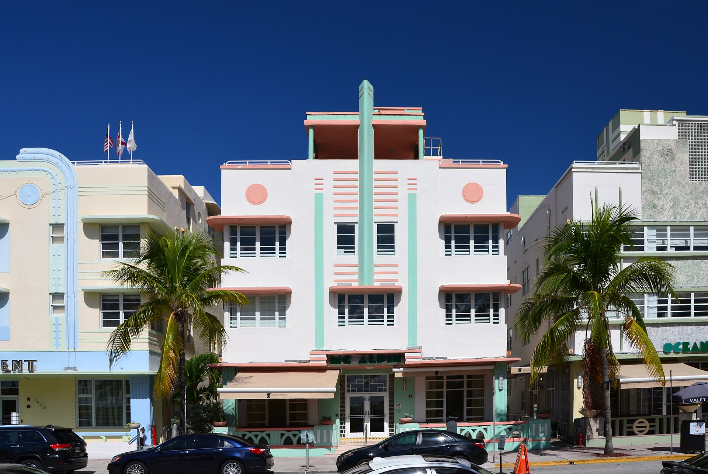
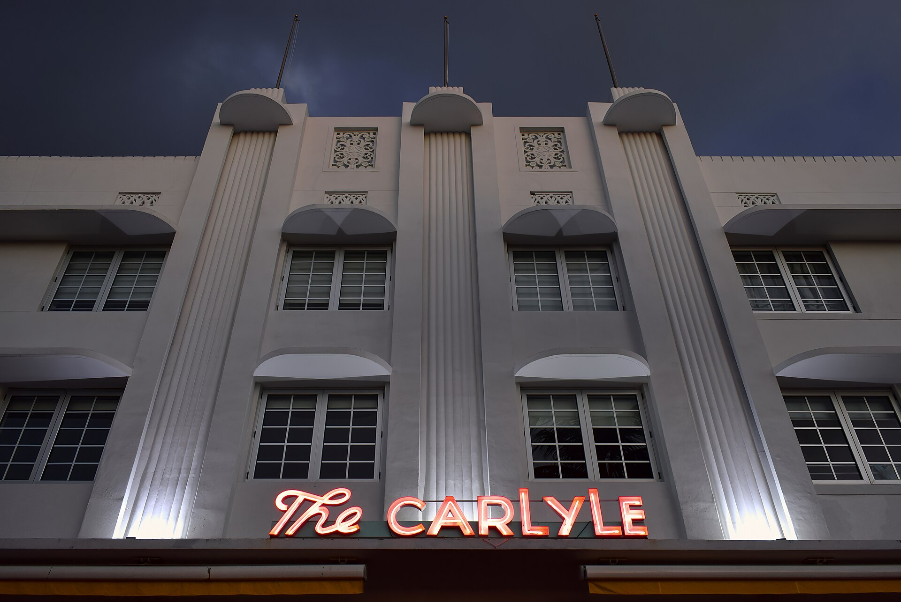
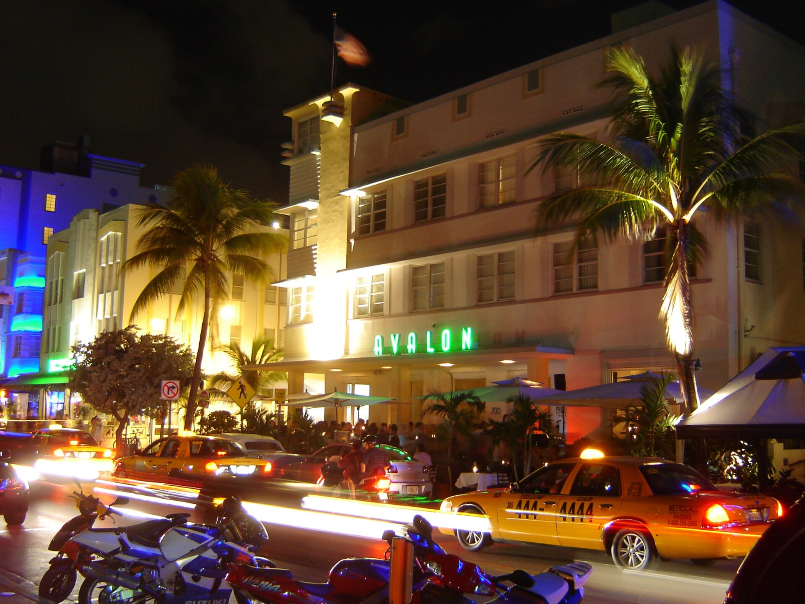
Six places to start: Vice City, the Leonida Keys, Grassrivers, Port Gellhorn, Ambrosia and Mount Kalaga. Rockstar's own tour of each is one tap away; here is the real Florida coast at night.
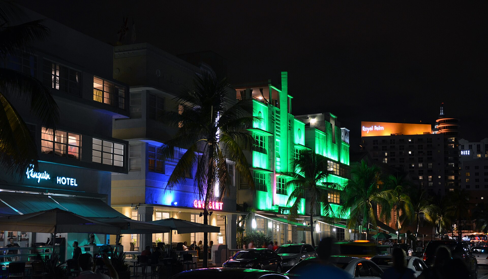
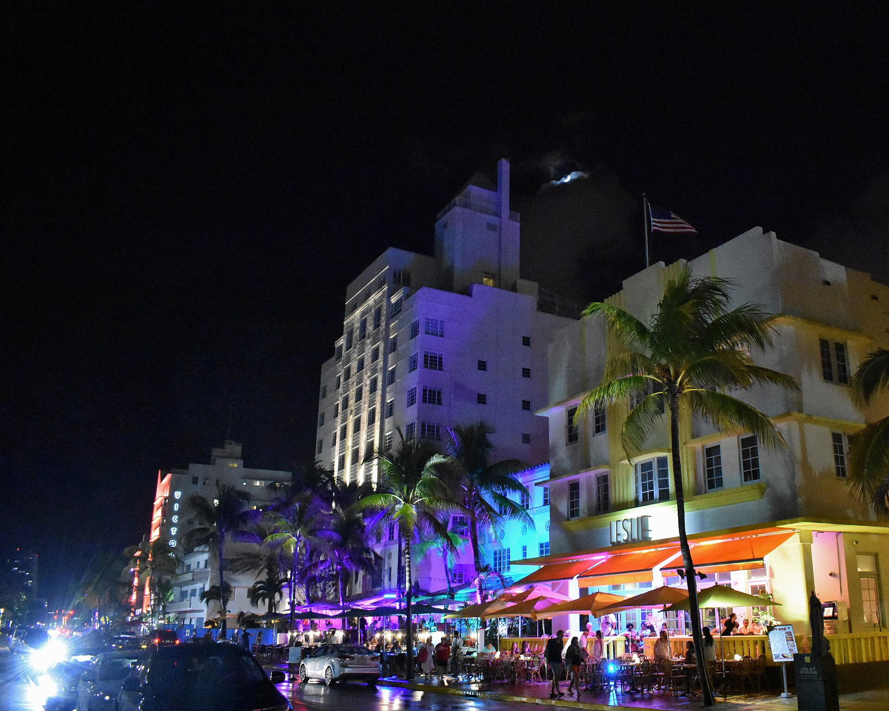
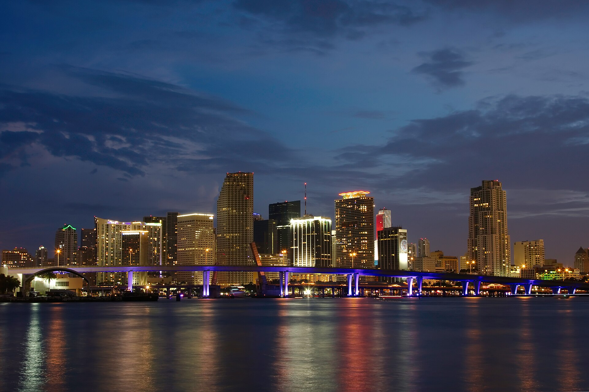
“Jason wants an easy life, but things just keep getting harder.”
He grew up around grifters and crooks. After a stint in the Army, he found himself in the Keys doing what he knows best: working for local drug runners.
“Lucia’s father taught her to fight as soon as she could walk.”
Fighting for her family landed her in the Leonida Penitentiary. Fresh out and ready to change the odds in her favor: only smart moves from here.
Jason and Lucia have always known the deck is stacked against them. But when an easy score goes wrong, they find themselves on the darkest side of the sunniest place in America.
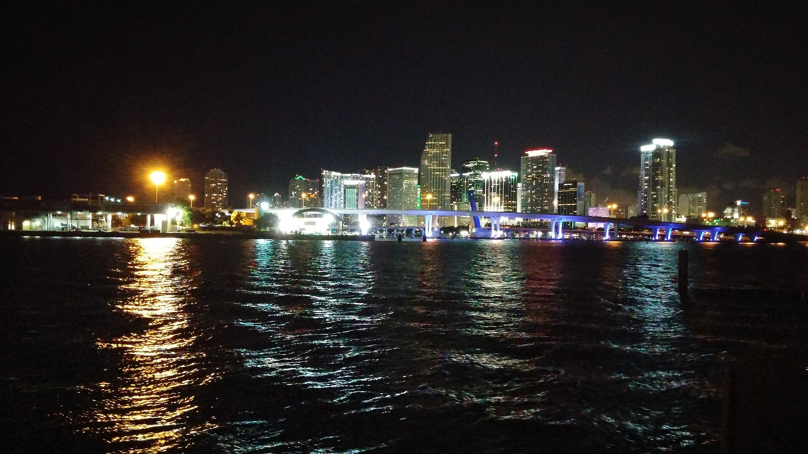
Miami after dark, cut on the beat for launch week. Real footage, no game footage.
October 15, 2026. “Flower in a Hurricane”, Justice feat. Tame Impala, SZA and King Gizzard & The Lizard Wizard.
August 27, 2026. Captured entirely from in-game footage on PlayStation 5.
May 6, 2025. Featuring “Hot Together” by The Pointer Sisters.
December 5, 2023. Featuring “Love Is a Long Road” by Tom Petty.
| Trailer 1 | “Love Is a Long Road” | YouTube | Dec 5, 2023 |
|---|---|---|---|
| Trailer 2 | “Hot Together” | YouTube | May 6, 2025 |
| Pre-orders open | Standard and Ultimate | PS5 · Xbox Series X|S | Jun 25, 2026 |
| An Extended Look | Captured in-game | PlayStation 5 | Aug 27, 2026 |
| Launch Trailer | “Flower in a Hurricane” | YouTube | Oct 15, 2026 |
| Pre-load | Digital copies | PS5 · Xbox Series X|S | Nov 10, 2026 |
| Out now | Worldwide | PS5 · Xbox Series X|S | Nov 19, 2026 |
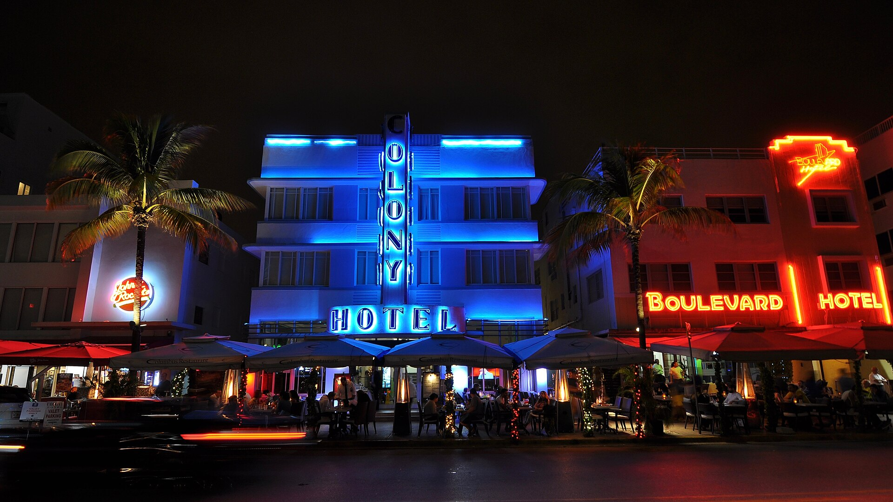
Grand Theft Auto VI is available worldwide on PlayStation 5 and Xbox Series X|S since November 19, 2026.
Go to rockstargames.com